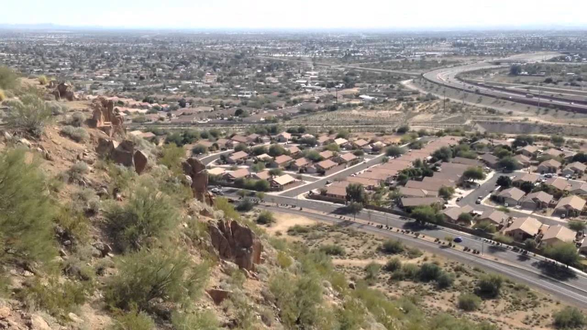
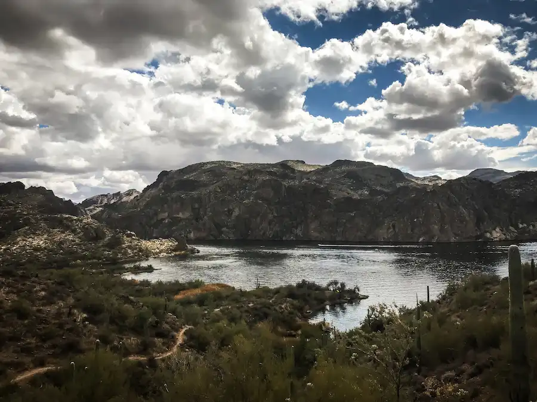
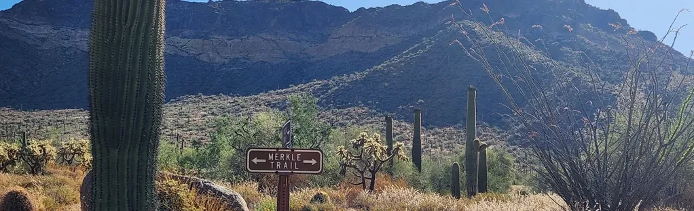
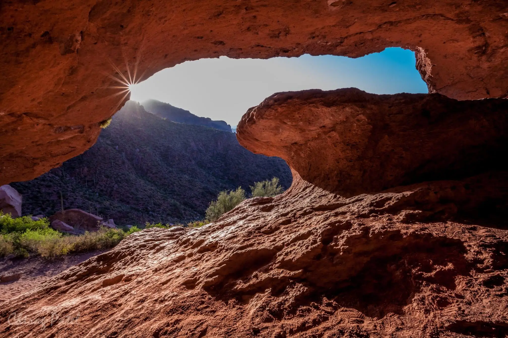

Welcome to East Valley Hikes!
Explore the stunning hikes and hidden gems of the Phoenix East Valley. From scenic desert landscapes to captivating mountain vistas, this guide will help you discover the best trails for every level of hiker. Whether you're looking for a quick escape or a day-long adventure, East Valley Trails offers insights, tips, and must-see spots to make the most of your journey. Lace up your boots, pack some water, and get ready to experience the beauty of the Arizona desert firsthand!
Featured Trails
Spook Mountain
Spook Mountain, or Spook Hill is a short trail in Mesa Arizona. It is a popular short hike, especially around the full moon.
Butcher Jones Trail
This trail is located at Saguaro lake. It is 4.9 miles long and only a 541 elevation gain. This hike features gorgeous views and you may see some wildlife!
Merkle Memorial Trail
Located in Usery Park, this trail is a 1 mile loop with minimal elevation gain. Little shade, but pretty sites!
Wave Cave Trail
Located near the Superstition mountains, this is a 3 mile trail out and back with about 846 feet of elevation gain. Breathtaking views for sure!
Careful!
Hiking in Arizona is no joke! Especially in the summertime. This is the Austrailia of the US, with many venomous creatures that you may come across. Be ever vigilant and bring lots of water!
Stay Updated!
Would you like to be notified about upcoming group hikes?